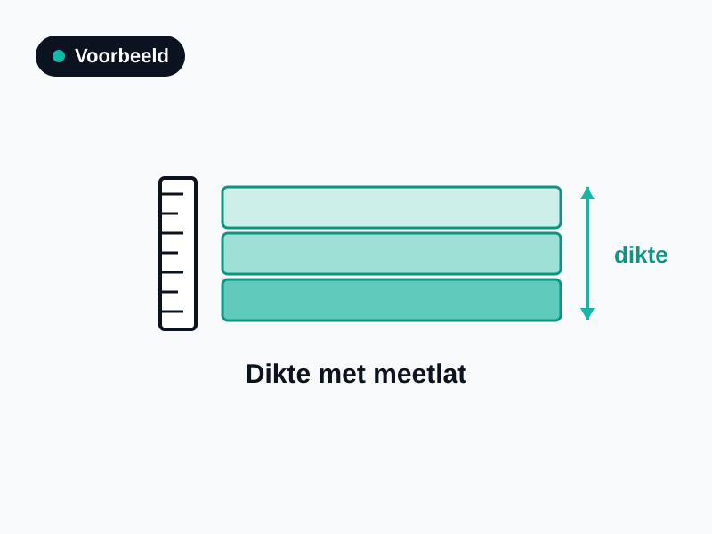

Isolatie in je muren zie je van buiten zelden. Dit onderdeel leunt daarom sterk op administratief bewijs — een goede factuur is goud waard.
Waarom dit telt
Gevelisolatie kan een groot verschil maken voor je label, maar is achteraf lastig zichtbaar. Zonder factuur of zichtbaar bewijs rekent de adviseur met de isolatiewaarde die bij het bouwjaar hoort — een woning van vóór 1976 wordt dan als ongeïsoleerd gerekend, ook als de spouw later wél is gevuld.
Hoe herken je het
De meeste woningen hebben een spouwmuur die later is na-geïsoleerd (ingeblazen). Soms is er binnen- of buitenisolatie aangebracht. Een doorsnede is soms zichtbaar bij een doorvoer, meterkast of open stopcontact in de buitenmuur, of tijdens een verbouwing.
Veelvoorkomende typen
Spouwisolatie: ingeblazen materiaal (EPS-parels, minerale wol, PUR) in de spouw.
Binnenisolatie: na-isolatie aan de binnenzijde van de gevel.
Buitenisolatie: isolatie aan de buitenzijde, met een nieuwe afwerklaag.
Gouden regel — controleer vóór aanschaf.
Ga vóór aanschaf en montage na of het product in de aangeboden opstelling bekend is bij het BCRG-register. Dan mag de adviseur de gunstige, productspecifieke waarde overnemen. Zo niet, dan geldt een voorzichtige forfaitaire waarde.
Wat moet op de factuur
Bouwdeel: gevel — spouw, binnen- of buitenisolatie.
Materiaal: merk en type (bv. EPS-parels, minerale wol, PUR).
Dikte / spouwbreedte (mm) en Rd-waarde indien vermeld.
Oppervlakte (m²) en montagewijze (bv. ingeblazen).
Certificaat: na-isolatiecertificaat of opleverrapport (vaak met endoscoop-foto's) is het sterkste bewijs.
Adres: factuur op het adres van de woning.
Welke foto's maak je
Overzichtsfoto van de gevel(s) van je woning.
Detailfoto van een zichtbare doorsnede mét meetlat (spouwbreedte + materiaal), indien aanwezig.
Foto van de vulgaten in de gevel (de boorgaten waardoor is ingespoten) bij na-isolatie.
1 · Overzicht gevel(s)

2 · Doorsnede met meetlat3 · Vulgaten / certificaat
Wat telt als bewijs?
Factuur (en offerte): met materiaal, dikte/spouwbreedte en wat er is geïsoleerd.
Na-isolatiecertificaat of opleverrapport: vaak met endoscoop-foto's van de gevulde spouw — het sterkste bewijs.
Bouwtekeningen met isolatiediktes: met het adres, de maker en het doel erop vermeld.
Oude foto's of een bouwkundig rapport: waarop materiaal en dikte herleidbaar zijn en duidelijk is wáár het zit.
Een mondelinge mededeling "de vorige eigenaar heeft het laten doen", zonder papier of foto.
Detailfoto van de spouw met meetlat waarop materiaal en breedte zichtbaar zijn.
Alleen een gevelfoto van buiten zonder enige onderbouwing.
Na-isolatiecertificaat op naam/adres van de woning.
Anonieme bon zonder adres of materiaalvermelding.
Veelgemaakte fouten
Alleen een gevelfoto van buiten — daaraan is de isolatie niet af te lezen.
Factuur zonder dikte/spouwbreedte of zonder materiaal.
Geen adres op de bon (niet herleidbaar naar de woning).
Vulgaten of na-isolatiecertificaat niet bewaard.
Wanneer forfaitair?
Zonder factuur of zichtbaar bewijs geldt de isolatiewaarde van het bouwjaar. Bij oudere woningen pakt dat ongunstig uit. Heb je een na-isolatiecertificaat? Dat is hét bewijs — bewaar het zorgvuldig.
Checklist gevels
Overzichtsfoto van de gevel(s)
Detailfoto doorsnede met meetlat (indien zichtbaar)
Foto's van de vulgaten bij na-isolatie
Factuur/opdrachtbevestiging met materiaal en dikte/spouwbreedte
Na-isolatiecertificaat of opleverrapport bewaard
Factuur op het adres van de woning
Labellift.nl · Onafhankelijk verduurzamingsplatform · Dit document is een hulpmiddel; de EPA-adviseur beoordeelt per situatie welk bewijs volgens NTA 8800 en BRL 9500 bruikbaar is.